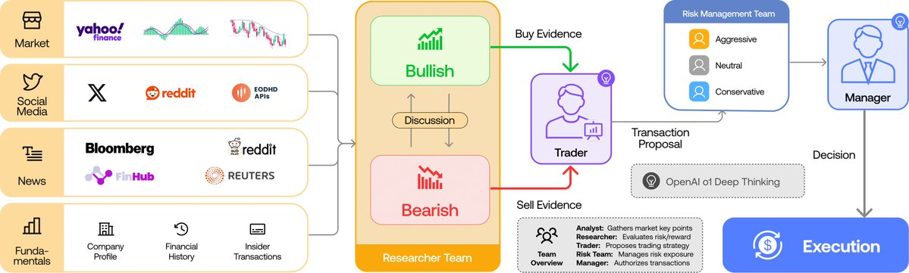
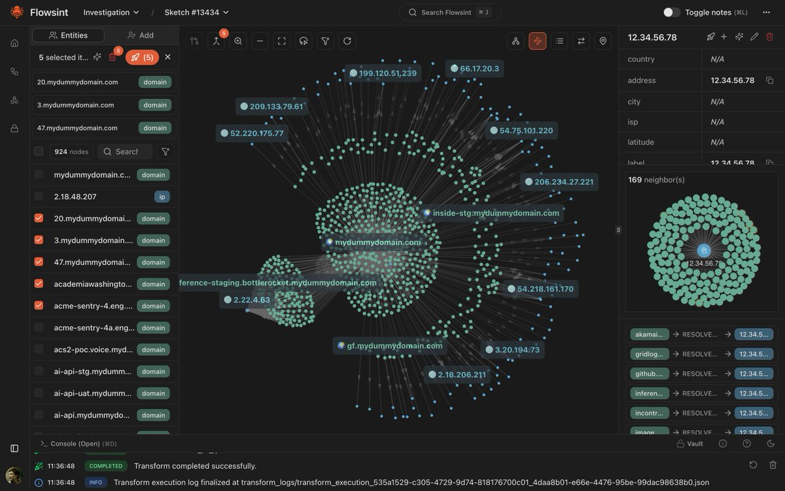
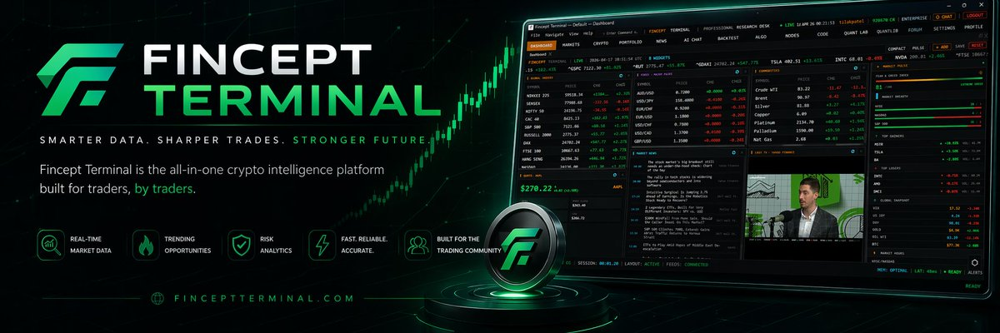
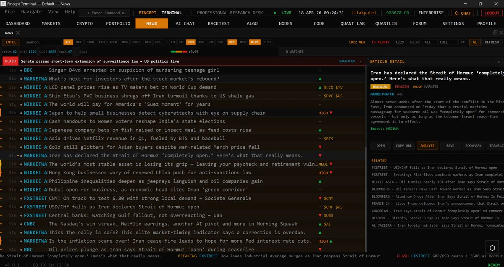

OPEN SOURCE TECH CARD · X + GITHUB EVIDENCE
TradingAgents：多智能体金融交易框架技术拆解
原帖说“10 个好到不该免费的 GitHub 仓库”，但公开正文只展开第 1 个：TradingAgents。本版按开源技术信息卡规范补齐：主张、仓库事实、架构、运行入口、工程边界与决策价值分层呈现。
X: https://twitter.com/Fluyeporlaweb/status/2061870611115188297 · Repo: https://github.com/TauricResearch/TradingAgents
0.2.5README 标注版本
82.5kGitHub stars · 核查时点
64tradingagents Python 文件
4+2+2分析师/研究员/风控角色链
01
结论：这不是“神奇炒股 bot”，而是交易研究组织的 LangGraph 化
TradingAgents 的核心价值是把金融研究拆成可审计的多角色流程：数据分析师并行收集证据，牛/熊研究员辩论，交易员生成提案，风险团队复核，组合经理授权。它适合作为多 Agent 工作流研究、金融分析原型与交易决策日志系统，不应被理解成稳定盈利保证。
LangGraphPython ≥3.10CLI + Packageyfinance / Alpha VantageLLM 多供应商
02
帖子主张 vs 仓库事实
层级
原帖/配图可见内容
仓库核查结果
帖子主张
“TradingAgents 像一个 24 小时工作的华尔街团队”：基本面、情绪、新闻、技术 4 类分析并行，随后由风控与执行 Agent 处理交易。
README 与代码树确有 Analyst / Researcher / Trader / Risk / Portfolio Manager 分层；入口包含 CLI 与 Python API。
配图证据
第 4 张图展示 Market、Social Media、News、Fundamentals → Researcher Team → Trader → Risk Management Team → Manager → Execution。
README 同样描述四类分析师、牛熊研究员、交易员、风险团队与组合经理；图中 OpenAI o1 是示意，不代表仓库只能用 OpenAI。
边界
原帖标题说 10 个仓库，但公开抓取正文仅含 TradingAgents；后续仓库未见完整正文。
本卡不臆造另外 9 个仓库；Flowsint 与 Fincept Terminal 配图只作为“相邻 AI 系统形态”归档，不当作 TradingAgents 仓库事实。
03
系统流：从市场信息到执行决策
输入层Market / Social Media / News / Fundamentals。README 明确提到 Yahoo Finance 覆盖市场，Alpha Vantage 作为 API，社交/新闻来源包括 Reddit、StockTwits、新闻数据。
→
分析师层Fundamentals Analyst、Sentiment Analyst、News Analyst、Technical Analyst 并行生成证据报告。
辩论层Bull Researcher 与 Bear Researcher 对分析师结论做风险收益辩论，由 Research Manager 形成投资计划。
→
交易层Trader 将投资计划转成 Buy / Sell / Hold 交易方向与交易提案，而不是直接让分析师下单。
风险层Aggressive、Neutral、Conservative 三类风险立场复核，Portfolio Manager 最终批准或拒绝。
→
执行/记录层模拟执行、保存 markdown 报告、写入决策日志；同 ticker 后续运行可读取历史结果并反思。
04
关键能力矩阵
多供应商 LLM
README v0.2.5 覆盖 OpenAI、Google、Anthropic、xAI、DeepSeek、Qwen、GLM、MiniMax、OpenRouter、Ollama、Azure 等供应商；配置里分 deep_think 与 quick_think。
结构化决策输出
Research Manager、Trader、Portfolio Manager 使用 Pydantic schema 约束输出，保留 markdown 报告同时提升跨模型一致性。
检查点恢复
LangGraph checkpoint resume 可在节点级保存状态；中断后从最后成功步骤恢复，而非整轮重新跑。
决策记忆
完成运行后写入 ~/.tradingagents/memory/trading_memory.md，后续同 ticker 分析可注入近期经验与 alpha 反思。
市场覆盖
支持 Yahoo Finance 覆盖的交易代码：美股、港股、日股、伦敦、印度、A 股后缀、加密货币等。
CLI + Python API
可运行 tradingagents 进入交互 CLI，也可 import TradingAgentsGraph 后调用 .propagate()。
05
安装与最小运行路径
git clone https://github.com/TauricResearch/TradingAgents.git
cd TradingAgents
conda create -n tradingagents python=3.13
conda activate tradingagents
pip install .
# 运行交互式 CLI
tradingagents
# 或从源码运行
python -m cli.main
# Docker 路径
cp .env.example .env # 填入 LLM / 数据源 API key
docker compose run --rm tradingagents
# Python API
from tradingagents.graph.trading_graph import TradingAgentsGraph
from tradingagents.default_config import DEFAULT_CONFIG
ta = TradingAgentsGraph(debug=True, config=DEFAULT_CONFIG.copy())
_, decision = ta.propagate("NVDA", "2026-01-15")
print(decision)
06
配置与依赖：开源项目实际工程形态
依赖栈
- LangGraph / LangChain：工作流与 LLM 接入
- pandas / stockstats / yfinance：市场数据处理
- rich / typer / questionary：CLI 交互
- backtrader：回测相关依赖
- redis / sqlite checkpoint：缓存与恢复场景
目录结构
tradingagents/agents：角色 Agent 与输出 schematradingagents/dataflows：市场/新闻/基本面数据接口tradingagents/graph：LangGraph 编排、条件逻辑、传播与反思tradingagents/llm_clients：供应商抽象层cli/：命令行入口与配置界面
07
适合谁，不适合谁
适合
- 研究多 Agent 决策链、辩论式 Agent 与金融分析工作流的人。
- 需要把“模型输出建议”拆成证据、反方、风险、授权几层的人。
- 想验证不同 LLM 供应商在同一交易研究流程中表现差异的开发者。
不适合
- 希望开箱即用自动赚钱的量化交易用户。
- 没有 API key、数据源预算或本地模型部署能力的用户。
- 无法接受非确定性输出、回测偏差与金融合规风险的生产环境。
08
风险与核查边界
金融与工程边界
README 明确声明该框架用于研究，交易表现受 backbone 模型、温度、交易周期、数据质量和非确定性因素影响，不构成投资建议。多 Agent 会增加可审计性，但也增加 token 成本、延迟、供应商故障面与提示词漂移风险。
核查时点本卡核查于 2026-06-03，GitHub API 返回 403 时改用公开 GitHub HTML、raw README、浅克隆代码树和本地文件统计。
未确认项原帖称“10 repositories”，但公开抓取正文仅含 TradingAgents；除第 1 项外不做仓库清单补全。
配图处理四张 X 来源图片已本地化到
docs/assets/images/；Flowsint / Fincept Terminal 截图只记录为帖图内容，不合并进 TradingAgents 仓库事实。09
来源配图归档




10
核心来源
X 原帖 API 文本；TradingAgents README；pyproject.toml；tradingagents/default_config.py；tradingagents/graph/setup.py；tradingagents/agents/schemas.py；本地浅克隆代码树；四张来源配图视觉抽取。